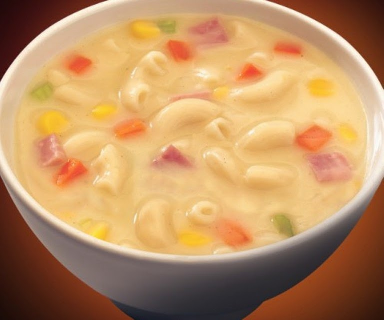

Back
CREAMY MACARONI SOUP/SOPAS

Ingredients
Instructions
JUMP TO VIDEO
Nutrition Information
Calories: 321kcal (16%) Carbohydrates: 43g (14%)
Protein: 12g (24%) Fat: 11g (17%) Saturated Fat: 5g (25%) Polyunsaturated
Fat: 1g Monounsaturated Fat: 3g Trans Fat: 0.3g Cholesterol: 33mg (11%)
Sodium: 540mg (23%) Potassium: 421mg (12%) Fiber: 3g (12%) Sugar: 4g (4%)
Vitamin A: 4290IU (86%) Vitamin C: 5mg (6%) Calcium: 48mg (5%) Iron: 1mg (6%)